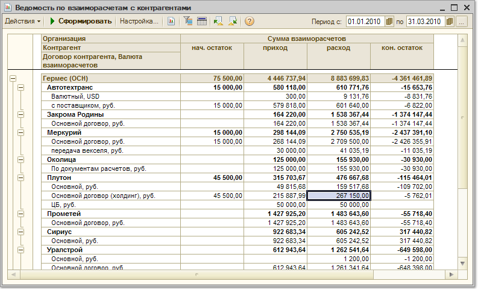

Меню Отчеты > Взаиморасчеты > Ведомость по взаиморасчетам c контрагентами
Отчет позволяет проанализировать остатки и движения по взаиморасчетам с контрагентами за заданный период.Параметры формирования отчета
По кнопке "Настройка" вызывается форма настройки параметров отчета.
Показатели
В отчете выводятся суммы взаиморасчетов в валютах взаиморасчетов и управленческого учета:
Показатели, данные которых необходимы в отчете, должны быть отмечены флагами.
Группировки строк и колонок
Отчет может быть сгруппирован по организациям, контрагентам, договорам контрагентов, документам расчетов, сделкам и периодам.Отборы
Данные отчета могут быть отфильтрованы по условиям, заданным в блоке "Отборы".Чтобы добавить вид отбора, щелкните кнопку "Добавить" и выберите поле, по которому будет производиться отбор. Затем задайте Тип сравнения, который определит область поиска заданного значения. Значение отбора выбирается из соответствующего справочника. Значением отбора может быть как отдельный элемент, так и группа и список выбранных элементов.
Вид отбора активен, только если в строке вида отбора установлен флаг.

По кнопке "Сформировать отчет" будет сформирован отчет с заданными параметрами в основном окне "Обороты счета". Кнопки сохранения и восстановления значений позволяют сохранять пользовательские настройки отчета, чтобы использовать их в дальнейшем.
По кнопке "Сохранить как " сформированный отчет можно сохранить в виде файла выбранного формата (в т.ч. Excel).
По кнопке "Печать" сформированный отчет выводится на печать.
По кнопке "История" можно быстро сформировать отчет по аналогии с предыдущими сформированными отчетами текущего пользователя.
Состав Панели настроек отчета можно настроить, вызвав по кнопке "Параметры панели настроек" диалог настройки. Установите флажки для блоков, которые должны отражаться на панели настроек.